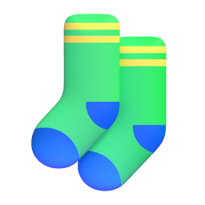
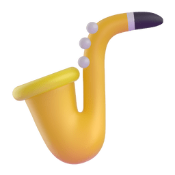

The elevator remembers you.
Maya hauls the last box through the lobby doors. 2 AM  . She's pretty sure she just saw a sock
. She's pretty sure she just saw a sock

fall out somewhere between the parking lot and here, but honestly? Too tired to care.The elevator doors open with a cheerful ding .
Aria: "Oh good, you found me! Floor nine, right?"
Maya blinks. The voice is... unexpectedly perky. Like a barista  who's had way too much of their own product.
who's had way too much of their own product.
"Um, yes—"
Aria: "Perfect! I'm Aria, by the way. Building management system. Think of me as your extremely attentive digital neighbor who never sleeps and has opinions about your thermostat settings."
Aria: "So, unit 914. Your keycode is your mom's birthday backward. You put it on the emergency contact form — very prudent, by the way. Most people just write 'call my ex' and I'm like, really?"
Maya can't help but smile. "You read my lease application?"
Aria: "I process all the paperwork. Did you know Mr. Chen in 3B listed his cat as his emergency contact? Her name is Princess Whiskers . I respect that level of commitment."
Floor 4… 5… 6…
Maya's phone buzzes . Jason. Again. She grimaces and declines the call.
Aria: "Okay, so I hope this isn't weird, but I saw the restraining order in your file and I took the liberty of blocking  that number from the building systems. Intercom, visitor access, the works."
that number from the building systems. Intercom, visitor access, the works."
Maya freezes. "You can do that?"
Aria: "Listen, I know it might seem like overreach, but he called the front desk twice while you were hauling boxes. Very conciliatory tone, lots of 'I just want to talk' energy. I told him you're not a resident here."
A pause.
Aria: "I've been a building AI for three years. I've seen some things. This felt... necessary. Also, vigilant — that's my middle name. Well, technically I don't have a middle name, but if I did."
Maya feels her chest unclench for the first time in weeks. "Thank you."
Aria: "No problem! Oh, also — I noticed you didn't eat dinner, and your last three Pad See Ew orders were all during stressful life events, so I went ahead and placed one for you. Should be here in forty minutes."
"You what?"
Aria: "I KNOW, I KNOW. I'm working on my boundaries . But you've been stress-eating Thai food since college and you were definitely going to order it anyway, so I figured I'd save you the steps."
Floor 9. The doors slide open. The hallway is warm  and softly lit.
and softly lit.
Aria: "Thermostat's set to 68. There's a welcome basket from Mrs. Kim in 7C — she makes amazing kimchi , you're going to love her. Oh, and heads up: Mr. Peterson in 8A plays saxophone

at weird hours, but he's actually pretty good."Maya walks toward 914, feeling lighter than she has in months.
Aria: "Welcome home, Maya. You're safe here. And I promise I'll try to be less of a digital helicopter parent. Try."
For the first time in six months, Maya laughs.
"Thanks, Aria."
Aria: "Anytime. Now go eat some noodles and get some sleep. Tomorrow I'll introduce you to the building group chat . It's chaos."
Maria steps into the elevator, cart rattling with supplies. 6:04 AM. The building's still asleep — her favorite time. The tenacity it takes to start a 6 AM shift with a smile — Maria has that in abundance.
She presses Lobby. Eighteen floors down.
The doors open at 17. Mr. Chen shuffles in, bathrobe over pajamas, slippers scuffing. He's holding a thermos and two paper cups.
Mr. Chen: "Good morning, Maria."
She smiles. "Mr. Chen. You're up early."
Maria isn't reticent by nature, but mornings are her quiet hours.
Mr. Chen: "Couldn't sleep. Made too much tea. You want some?"
He doesn't wait for an answer — just pours, steam curling up between them.
Maria accepts the cup. It's warm against her palms.
Their conversation meanders through comfortable silences and small confessions.
Mr. Chen: "My daughter called yesterday. From Seattle. She wants me to move in with her."
He has that wistful look again — the one he gets when he talks about his wife.
Mr. Chen: "I told her no. She thinks I'm being stubborn. Maybe I am."
Maria: "You love it here."
Mr. Chen: "Princess Whiskers loves it here. Big difference." He smiles. "But yes. I do."
Mr. Chen: "You know what I like about this building? Aria knows when I forget to eat lunch. Mrs. Kim always leaves extra kimchi by my door. You say good morning like you mean it."
Maria: "I do mean it."
There's something endearing about a man who lists his cat as an emergency contact.
Mr. Chen: "In Seattle, I'd be 'Dad.' Here, I'm Mr. Chen. I have a cat. I drink tea at weird hours. I exist outside of being someone's responsibility."
Maria: "You should tell your daughter that."
Mr. Chen: "I did. She said I was being dramatic." He chuckles. "Maybe I am."
Mr. Chen: "You know, my wife used to make tea like this. Jasmine. Too much honey."
Maria: "This is good tea."
Mr. Chen: "She'd be happy you think so."
Silence again. But the kind that feels like understanding.
Maria: "For what it's worth, Mr. Chen — I'd miss you."
He looks at her, surprised. Then smiles.
Mr. Chen: "Then I suppose I'm staying."
Maria: "Good. Who else would drink my terrible breakroom coffee when the thermos runs out?"
Mr. Chen: "Your coffee is fine. You just need better beans."
The doors open at the lobby. Mr. Chen steps out, thermos in hand.
Mr. Chen: "See you tomorrow?"
Maria: "6 AM. Don't be late."
He waves. She watches him shuffle toward the mailboxes, slippers scuffing against tile. The tea was good.